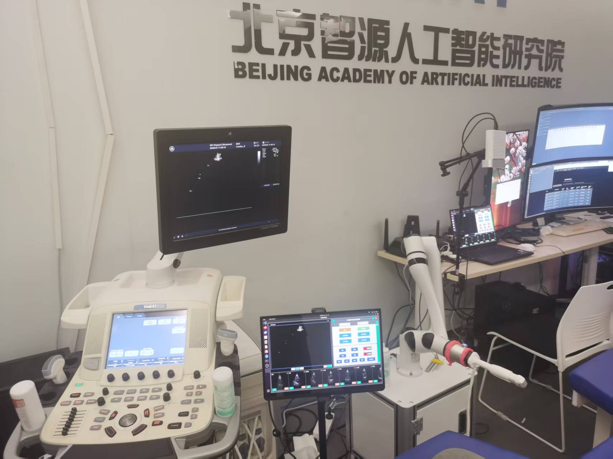

项目二：心脏超声自主扫查机器人系统
研发实习

项目介绍
北京领视智远科技有限公司，北京智源人工智能研究院 自动控制实习生
项目背景：清华大学自动化系校企合作项目，联合中国人民解放军总医院研发全球首款智能心脏超声扫查机器人
工作职责：优化与完善项目中对睿尔曼机械臂的控制算法；负责机械臂末端快拆式超声探头夹具的结构设计、优化与迭代；根据需求完成项目功能集成的 UI 设计并进行测试与优化
项目成果
• 通过 ROS 通讯完善了机械臂控制中的数据传输，并对机械臂力控算法进行优化
• 设计并实现了一种结构稳定、拆装便捷的超声探头夹具
• 实现了面向商业化的 UI 界面设计，满足系统功能集成需求，性能及响应良好
• 实现心脏超声检测报告的自动化生成与打印
关键技术
- 机械臂控制
- ROS
- 结构设计
- UI界面设计
- python
- C++